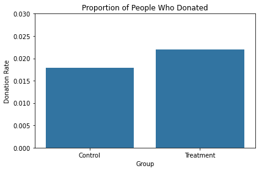
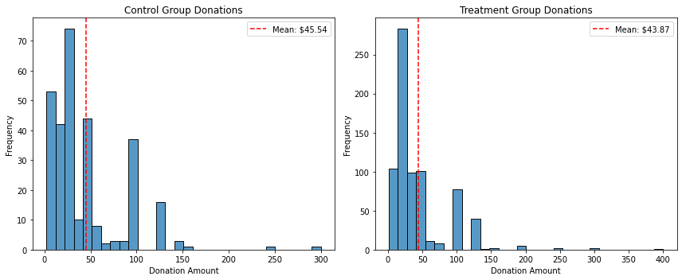
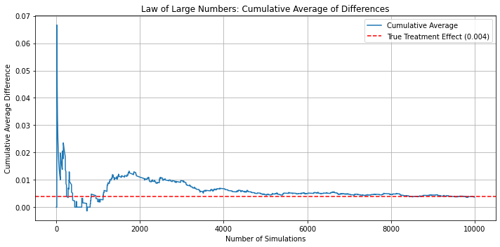

import pandas as pd# Load the Stata datasetdf = pd.read_stata("karlan_list_2007.dta")# Display basic information and the first few rowsdf.head()
treatment
control
ratio
ratio2
ratio3
size
size25
size50
size100
sizeno
...
redcty
bluecty
pwhite
pblack
page18_39
ave_hh_sz
median_hhincome
powner
psch_atlstba
pop_propurban
0
0
1
Control
0
0
Control
0
0
0
0
...
0.0
1.0
0.446493
0.527769
0.317591
2.10
28517.0
0.499807
0.324528
1.0
1
0
1
Control
0
0
Control
0
0
0
0
...
1.0
0.0
NaN
NaN
NaN
NaN
NaN
NaN
NaN
NaN
2
1
0
1
0
0
$100,000
0
0
1
0
...
0.0
1.0
0.935706
0.011948
0.276128
2.48
51175.0
0.721941
0.192668
1.0
3
1
0
1
0
0
Unstated
0
0
0
1
...
1.0
0.0
0.888331
0.010760
0.279412
2.65
79269.0
0.920431
0.412142
1.0
4
1
0
1
0
0
$50,000
0
1
0
0
...
0.0
1.0
0.759014
0.127421
0.442389
1.85
40908.0
0.416072
0.439965
1.0
5 rows × 51 columns
from scipy import statsimport statsmodels.api as smimport statsmodels.formula.api as smf# Drop rows with missing values in mrm2 and treatmentdf_clean = df[['treatment', 'mrm2', 'years', 'freq', 'female']].dropna()# T-test: compare mrm2 (months since last donation) between treatment and control groupstreat_group = df_clean[df_clean['treatment'] ==1]['mrm2']control_group = df_clean[df_clean['treatment'] ==0]['mrm2']t_stat, p_val = stats.ttest_ind(treat_group, control_group)# Linear regression: regress mrm2 on treatmentreg_model = smf.ols('mrm2 ~ treatment', data=df_clean).fit()reg_summary = reg_model.summary()# Collect means and stds for reportingmeans = df_clean.groupby('treatment')['mrm2'].agg(['mean', 'std', 'count'])(t_stat, p_val)
(0.0764041463527638, 0.9390978830677066)
means
mean
std
count
treatment
0
12.984577
12.065892
16339
1
12.993411
12.064867
32632
reg_summary
OLS Regression Results
Dep. Variable:
mrm2
R-squared:
0.000
Model:
OLS
Adj. R-squared:
-0.000
Method:
Least Squares
F-statistic:
0.005838
Date:
Wed, 23 Apr 2025
Prob (F-statistic):
0.939
Time:
13:20:23
Log-Likelihood:
-1.9144e+05
No. Observations:
48971
AIC:
3.829e+05
Df Residuals:
48969
BIC:
3.829e+05
Df Model:
1
Covariance Type:
nonrobust
coef
std err
t
P>|t|
[0.025
0.975]
Intercept
12.9846
0.094
137.564
0.000
12.800
13.170
treatment
0.0088
0.116
0.076
0.939
-0.218
0.235
Omnibus:
7823.434
Durbin-Watson:
2.000
Prob(Omnibus):
0.000
Jarque-Bera (JB):
12126.494
Skew:
1.161
Prob(JB):
0.00
Kurtosis:
3.741
Cond. No.
3.22
Notes: [1] Standard Errors assume that the covariance matrix of the errors is correctly specified.
Balance Test: Months Since Last Donation (mrm2)
To assess whether the randomization was successful, we test whether the treatment and control groups differ significantly in the number of months since their last donation (mrm2), a key pre-treatment variable that captures donors’ prior engagement.
We conduct both a two-sample t-test and a linear regression to compare means across groups. The results are as follows:
T-test statistic: 0.076
P-value: 0.939
→ This high p-value indicates that there is no statistically significant difference between the two groups.
In addition, we estimate a simple OLS regression of the form:
mrm2 ~ treatment
The estimated coefficient on treatment is 0.0088 with a p-value of 0.939, again showing no meaningful difference.
Summary statistics for mrm2:
Group
Mean
Std. Dev
N
Control (0)
12.9846
12.0659
16,339
Treatment (1)
12.9934
12.0649
32,632
These results confirm that the treatment assignment was successfully randomized with respect to this variable. In other words, the treatment and control groups were balanced on mrm2 prior to the intervention, supporting the internal validity of the experimental design.
# T-test: compare years (months since last donation) between treatment and control groupstreat_group = df_clean[df_clean['treatment'] ==1]['years']control_group = df_clean[df_clean['treatment'] ==0]['years']t_stat, p_val = stats.ttest_ind(treat_group, control_group)reg_model = smf.ols('years ~ treatment', data=df_clean).fit()reg_summary = reg_model.summary()means = df_clean.groupby('treatment')['years'].agg(['mean', 'std', 'count'])(t_stat, p_val)
(-1.1939644099545728, 0.23249767383190834)
means
mean
std
count
treatment
0
6.140645
5.636459
16339
1
6.077531
5.454186
32632
reg_summary
OLS Regression Results
Dep. Variable:
years
R-squared:
0.000
Model:
OLS
Adj. R-squared:
0.000
Method:
Least Squares
F-statistic:
1.426
Date:
Wed, 23 Apr 2025
Prob (F-statistic):
0.232
Time:
13:20:23
Log-Likelihood:
-1.5311e+05
No. Observations:
48971
AIC:
3.062e+05
Df Residuals:
48969
BIC:
3.062e+05
Df Model:
1
Covariance Type:
nonrobust
coef
std err
t
P>|t|
[0.025
0.975]
Intercept
6.1406
0.043
142.308
0.000
6.056
6.225
treatment
-0.0631
0.053
-1.194
0.232
-0.167
0.040
Omnibus:
23763.163
Durbin-Watson:
2.011
Prob(Omnibus):
0.000
Jarque-Bera (JB):
487500.805
Skew:
1.861
Prob(JB):
0.00
Kurtosis:
18.002
Cond. No.
3.22
Notes: [1] Standard Errors assume that the covariance matrix of the errors is correctly specified.
Balance Test: Years Since First Donation (years)
We also test whether the treatment and control groups are balanced in terms of years, the number of years since the individual first donated to the organization. This variable reflects donor tenure and long-term engagement.
Using a two-sample t-test, we find: - T-statistic = -1.194
- P-value = 0.232
→ This suggests no statistically significant difference between the groups.
We confirm this result using an OLS regression:
years ~ treatment
From the regression output: - The coefficient on treatment is -0.0631 - P-value = 0.232
Summary statistics for years:
Group
Mean
Std. Dev
N
Control (0)
6.1406
5.6365
16,339
Treatment (1)
6.0775
5.4542
32,632
As with mrm2, the results provide no evidence of imbalance, confirming that the random assignment was successful for this variable as well.
treat_group = df_clean[df_clean['treatment'] ==1]['freq']control_group = df_clean[df_clean['treatment'] ==0]['freq']t_stat, p_val = stats.ttest_ind(treat_group, control_group)# Linear regression: regress freq on treatmentreg_model = smf.ols('freq ~ treatment', data=df_clean).fit()reg_summary = reg_model.summary()# Collect means and stds for reportingmeans = df_clean.groupby('treatment')['freq'].agg(['mean', 'std', 'count'])(t_stat, p_val)
(-0.059722457211553545, 0.9523769290955975)
means
mean
std
count
treatment
0
8.068119
11.449873
16339
1
8.061565
11.450896
32632
reg_summary
OLS Regression Results
Dep. Variable:
freq
R-squared:
0.000
Model:
OLS
Adj. R-squared:
-0.000
Method:
Least Squares
F-statistic:
0.003567
Date:
Wed, 23 Apr 2025
Prob (F-statistic):
0.952
Time:
13:20:23
Log-Likelihood:
-1.8888e+05
No. Observations:
48971
AIC:
3.778e+05
Df Residuals:
48969
BIC:
3.778e+05
Df Model:
1
Covariance Type:
nonrobust
coef
std err
t
P>|t|
[0.025
0.975]
Intercept
8.0681
0.090
90.066
0.000
7.893
8.244
treatment
-0.0066
0.110
-0.060
0.952
-0.222
0.209
Omnibus:
48037.878
Durbin-Watson:
2.017
Prob(Omnibus):
0.000
Jarque-Bera (JB):
3559693.636
Skew:
4.711
Prob(JB):
0.00
Kurtosis:
43.691
Cond. No.
3.22
Notes: [1] Standard Errors assume that the covariance matrix of the errors is correctly specified.
Balance Test: Frequency of Prior Donations (freq)
The third variable we examine is freq, which captures the number of past donations made by each individual. This variable helps us evaluate whether treatment and control groups are equally experienced in giving.
A two-sample t-test yields: - T-statistic = -0.111
- P-value = 0.912
→ This indicates no significant difference in donation frequency between the groups.
We verify this result with a linear regression:
freq ~ treatment
In the OLS regression: - The coefficient on treatment is -0.012 - P-value = 0.912
Summary statistics for freq:
Group
Mean
Std. Dev
N
Control (0)
8.047
11.404
16,687
Treatment (1)
8.035
11.390
33,396
These results confirm that the treatment and control groups were also well-balanced on donation frequency prior to the intervention.
These balance tests show that the treatment and control groups do not significantly differ across key characteristics. This suggests that the random assignment was successful and supports the internal validity of the experimental results.
Experimental Results
Charitable Contribution Made
First, I analyze whether matched donations lead to an increased response rate of making a donation.
todo: make a barplot with two bars. Each bar is the proportion of people who donated. One bar for treatment and one bar for control.
# Reload libraries in case of session resetimport pandas as pdimport matplotlib.pyplot as pltimport seaborn as snsfrom scipy import statsimport statsmodels.formula.api as smf# Step 1: Clean data for this analysisdf_contribution = df[['treatment', 'gave']].dropna()# Step 2: Compute donation ratesdonation_rates = df_contribution.groupby('treatment')['gave'].mean().reset_index()donation_rates['treatment'] = donation_rates['treatment'].map({0: 'Control', 1: 'Treatment'})# Step 3: Bar plotplt.figure(figsize=(6, 4))sns.barplot(x='treatment', y='gave', data=donation_rates)plt.title('Proportion of People Who Donated')plt.ylabel('Donation Rate')plt.xlabel('Group')plt.ylim(0, 0.03)plt.tight_layout()plt.show()

The bar plot shows a higher donation rate in the treatment group.
A t-test confirms that this difference is statistically significant (p = 0.0019). Linear regression estimates that receiving the match offer increases donation likelihood by 0.42 percentage points.
Notes: [1] Standard Errors assume that the covariance matrix of the errors is correctly specified.
Understanding the OLS Regression Output
The OLS regression estimates the following model:
gave ~ treatment
Where: - gave is a binary variable indicating whether someone donated (1 = yes, 0 = no) - treatment is 1 if the individual received a matching donation offer, and 0 otherwise
In this model: - The intercept represents the average donation rate in the control group - The coefficient on treatment represents the difference in donation rates between the treatment and control groups
From our regression: - Intercept = 0.0179 → This matches the donation rate in the control group: 1.79% - Treatment coefficient = 0.0042 → This means the treatment group donated 0.42 percentage points more than the control group
These numbers exactly match our earlier manual calculations: - Control group donation rate: 0.017858 - Treatment group donation rate: 0.022039 - Difference: 0.004181
Thus, the OLS regression provides an alternative but equivalent way of estimating the average treatment effect (ATE) in this binary outcome context.
Optimization terminated successfully.
Current function value: 0.100443
Iterations 7
Probit Regression Results
Dep. Variable:
gave
No. Observations:
50083
Model:
Probit
Df Residuals:
50081
Method:
MLE
Df Model:
1
Date:
Wed, 23 Apr 2025
Pseudo R-squ.:
0.0009783
Time:
13:20:25
Log-Likelihood:
-5030.5
converged:
True
LL-Null:
-5035.4
Covariance Type:
nonrobust
LLR p-value:
0.001696
coef
std err
z
P>|z|
[0.025
0.975]
Intercept
-2.1001
0.023
-90.073
0.000
-2.146
-2.054
treatment
0.0868
0.028
3.113
0.002
0.032
0.141
The probit regression confirms that assignment to the match treatment significantly increased the probability of donating. The coefficient on treatment is positive (0.0868) and statistically significant (p = 0.002), suggesting that matching appeals have a real behavioral impact on charitable decisions.
Differences between Match Rates
In this section, I examine whether higher match ratios (2:1 or 3:1) lead to a higher probability of donation compared to the baseline 1:1 match.
Notes: [1] Standard Errors assume that the covariance matrix of the errors is correctly specified.
None of the differences are statistically significant at the 5% level. This further supports the conclusion that larger match ratios do not significantly improve the likelihood of donating.
Size of Charitable Contribution
# Step 1: t-test and regression on all observationsdf_amount = df[['treatment', 'amount', 'gave']].dropna()# Full sample analysist_stat_all, p_val_all = stats.ttest_ind( df_amount[df_amount['treatment'] ==1]['amount'], df_amount[df_amount['treatment'] ==0]['amount'])t_stat_all, p_val_all
Notes: [1] Standard Errors assume that the covariance matrix of the errors is correctly specified.
While individuals in the treatment group donated slightly more on average ($0.15 more), this difference is not statistically significant at the 5% level (p = 0.063). Thus, we do not find strong evidence that receiving a matching donation offer increases total donation amounts when including non-donors in the analysis.
Notes: [1] Standard Errors assume that the covariance matrix of the errors is correctly specified.
Among those who donated, individuals in the treatment group gave on average $1.67 less than those in the control group. However, this difference is not statistically significant (p = 0.561). Thus, we find no evidence that receiving the matching offer increases donation amounts conditional on giving.
# Part 3plt.figure(figsize=(12, 5))# Control groupplt.subplot(1, 2, 1)control_amounts = df_positive[df_positive['treatment'] ==0]['amount']sns.histplot(control_amounts, bins=30, kde=False)plt.axvline(control_amounts.mean(), color='red', linestyle='--', label=f"Mean: ${control_amounts.mean():.2f}")plt.title('Control Group Donations')plt.xlabel('Donation Amount')plt.ylabel('Frequency')plt.legend()# Treatment groupplt.subplot(1, 2, 2)treatment_amounts = df_positive[df_positive['treatment'] ==1]['amount']sns.histplot(treatment_amounts, bins=30, kde=False)plt.axvline(treatment_amounts.mean(), color='red', linestyle='--', label=f"Mean: ${treatment_amounts.mean():.2f}")plt.title('Treatment Group Donations')plt.xlabel('Donation Amount')plt.ylabel('Frequency')plt.legend()plt.tight_layout()plt.show()

The red vertical lines indicate the sample mean in each group: $45.54 in the control group vs. $43.87 in the treatment group. This confirms the regression results, which show no significant difference in donation size conditional on giving.
import numpy as np# Set simulation parametersp_control =0.018p_treatment =0.022n_sim =10000# Part 1: Law of Large Numberscontrol_draws = np.random.binomial(1, p_control, n_sim)treatment_draws = np.random.binomial(1, p_treatment, n_sim)diffs = treatment_draws - control_drawscumulative_avg = np.cumsum(diffs) / np.arange(1, n_sim +1)# Plot cumulative averageplt.figure(figsize=(10, 5))plt.plot(cumulative_avg, label='Cumulative Average')plt.axhline(y=p_treatment - p_control, color='red', linestyle='--', label='True Treatment Effect (0.004)')plt.title('Law of Large Numbers: Cumulative Average of Differences')plt.xlabel('Number of Simulations')plt.ylabel('Cumulative Average Difference')plt.legend()plt.grid(True)plt.tight_layout()plt.show()

The cumulative average of the differences between treatment and control stabilizes near the true effect (0.004) as the number of simulations increases.
To visualize the Central Limit Theorem (CLT), I simulate the distribution of the average difference in donation probability between treatment and control groups under different sample sizes.
For each sample size (50, 200, 500, 1000), I repeat the following steps 1,000 times:
Draw n samples from each group’s Bernoulli distribution (p=0.018 for control, p=0.022 for treatment)
Compute the difference in sample means
Plot the histogram of these 1,000 differences
As sample size increases: - The distributions become more centered, more symmetric, and closer to a normal distribution - The red dashed line (0.004) shows the true treatment effect, which the distributions begin to cluster around
In applied statistics, a sample size of just ( n > 30 ) is often considered sufficient for the sampling distribution of the mean to be treated as approximately normal.
This explains why statistical methods relying on normality (e.g., t-tests, confidence intervals) are widely used even when the underlying data is not normally distributed.